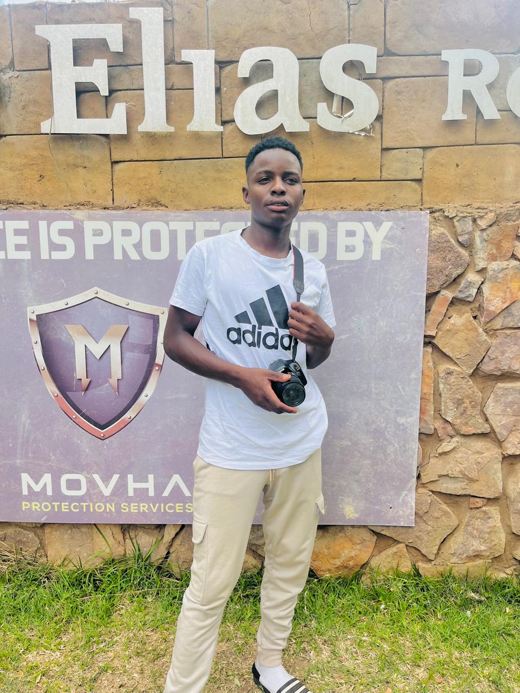

Web Developer & IT Student
Hire MeI am a motivated and detail-oriented Information Technology student with a strong passion for web development and modern technologies. I enjoy creating interactive, user-friendly websites and continuously improving my skills through hands-on projects and self-learning.
My journey in IT has given me a solid foundation in front-end development, where I work with HTML, CSS, and JavaScript to build responsive and visually appealing interfaces. I am also familiar with React and enjoy exploring how JavaScript frameworks improve performance and user experience.
Beyond coding, I value problem-solving, creative thinking, and effective communication. I am always eager to learn new technologies, collaborate with others, and take on challenges that help me grow both technically and professionally.
My goal is to become a skilled software or web developer, contribute to real-world projects, and build solutions that make a positive impact. I am currently seeking opportunities to gain practical experience and expand my knowledge in the tech industry.